Nove critérios de aceite verificados: 4 comprovados integralmente no navegador (CA02, CA03, CA04 e a parte visual do CA01), 1 exclusivamente pela suíte automatizada (CA08, que é regra de rota do guard client e não tem UI no Painel Global) e 4 de forma combinada (CA01, CA05, CA06, CA07 e CA09 apoiam-se em tela mais backend). Nenhum critério ficou em aberto. Os quatro domínios apresentam exatamente as listas do Manual do SIAP — 9 tipos de residência, 9 níveis de escolaridade, 5 situações escolares e 10 tipos de deficiência — com os códigos literais 1..9 / 1..9 / 1..5 / 1..10. As 16 combinações de verbo de escrita (POST, PUT, PATCH, DELETE nos quatro recursos) responderam 405 na API em execução, e a suíte Pest (97 testes, 371 asserções) confirma o mesmo nos dois guards. Registra-se um achado de permissionamento: o Operacional Global não recebeu as oito abilities de leitura dos novos domínios e recebe /403 ao acessá-los, divergindo da §3 da spec — detalhado em Observações e ressalvas.
| CA | Critério | Status |
|---|---|---|
| CA01 | Quatro domínios disponíveis (happy path) | ATENDIDO · navegador + automatizado |
| CA02 | Tipo de residência com as nove opções | ATENDIDO · navegador |
| CA03 | Tipo de deficiência com as dez opções | ATENDIDO · navegador |
| CA04 | De-para de escolaridade visível | ATENDIDO · navegador |
| CA05 | Grau sem correspondência gera pendência | ATENDIDO · navegador + automatizado |
| CA06 | Item fora do domínio não é criado | ATENDIDO · navegador + automatizado |
| CA07 | Item não é excluído nem inativado | ATENDIDO · navegador + automatizado |
| CA08 | Município não edita as listas | ATENDIDO · automatizado |
| CA09 | Alteração do de-para auditada | ATENDIDO · navegador + automatizado |
Critério (Gherkin): Dado que sou Administrador no Painel de Administração Global Quando eu consultar os cadastros de tipo de residência, escolaridade, situação escolar e tipo de deficiência Então cada um apresenta exatamente as opções do Manual do SIAP, com seus códigos E nenhum deles tem item além do domínio
Como foi testado: Autenticado como Administrador (CPF 620.174.905-55) no guard manager, percorri o grupo Cadastros SUAS › Diagnóstico (Manual SIAP) do menu lateral, que reúne as quatro telas novas, e abri uma a uma: /app/residence-types, /app/schooling-levels, /app/school-situations e /app/disability-types. Em cada tela conferi o rodapé de paginação (“Exibindo 1–N de N”) para garantir que a contagem vista é a contagem total, e não uma primeira página. As duas telas cujas listas já aparecem nos critérios seguintes (residência e deficiência) estão evidenciadas no CA02 e no CA03. A conferência código a código nos dois guards está coberta pela suíte automatizada (anexo).
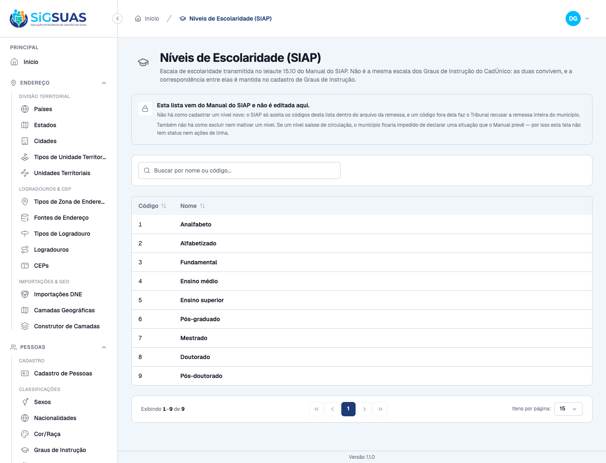
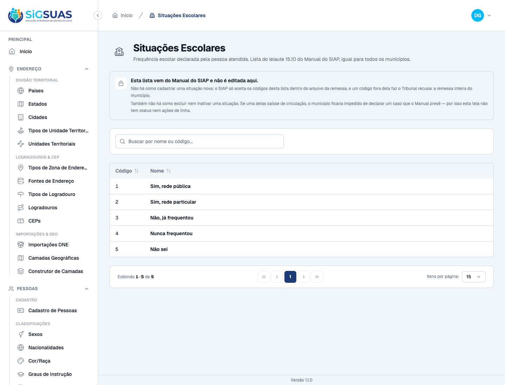
Critério (Gherkin): Dado que estou consultando o cadastro de tipo de residência Quando eu abrir a lista Então vejo as nove opções do leiaute, incluindo aluguel social, arrendada, financiada e invadida E as quatro do instrumento do MDS (própria, alugada, cedida, ocupada) estão entre elas
Como foi testado: Abri /app/residence-types como Administrador e li a tabela inteira na tela, sem filtro e sem paginar, confrontando cada linha com a tabela §4.1 da spec (leiaute 15.11 do Manual do SIAP).
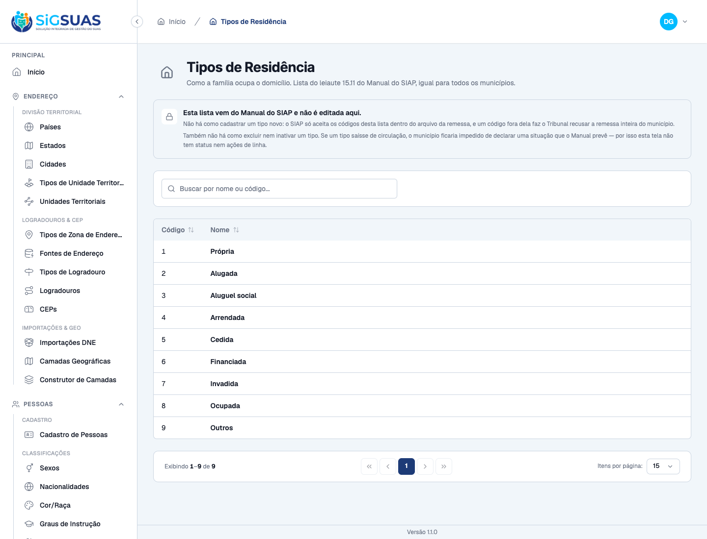
Critério (Gherkin): Dado que estou consultando o cadastro de tipo de deficiência Quando eu abrir a lista Então vejo as dez opções do leiaute, incluindo deficiência múltipla e transtorno do espectro autista E "transtorno ou doença mental" NÃO está na lista
Como foi testado: Abri /app/disability-types como Administrador e li as dez linhas, verificando tanto o que deve estar quanto o que não pode estar — esta segunda metade é o ponto do critério (decisão D09 da spec): “transtorno ou doença mental” existe no bloco 10 do instrumento do MDS e não existe no leiaute 15.10; incluí-lo faria o SIAP recusar a remessa inteira do município.
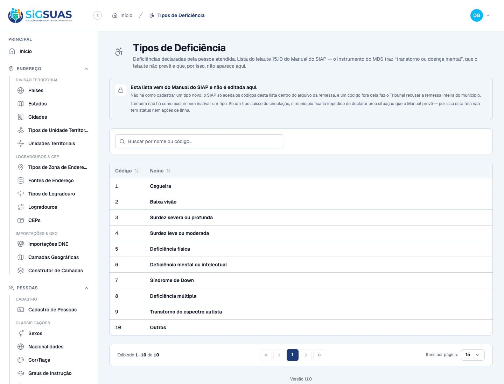
Critério (Gherkin): Dado que estou consultando o cadastro de graus de instrução do CadÚnico Quando eu abrir um item Então ele indica para qual dos nove níveis de escolaridade do leiaute corresponde
Como foi testado: Abri /app/education-levels (Graus de Instrução do CadÚnico) e, além da coluna nova Escolaridade (SIAP) visível na listagem, abri o item “Sem instrução” pelo menu de ações › Editar e expandi o seletor Escolaridade correspondente (SIAP) para conferir que ele oferece exatamente os nove níveis do leiaute 15.10.
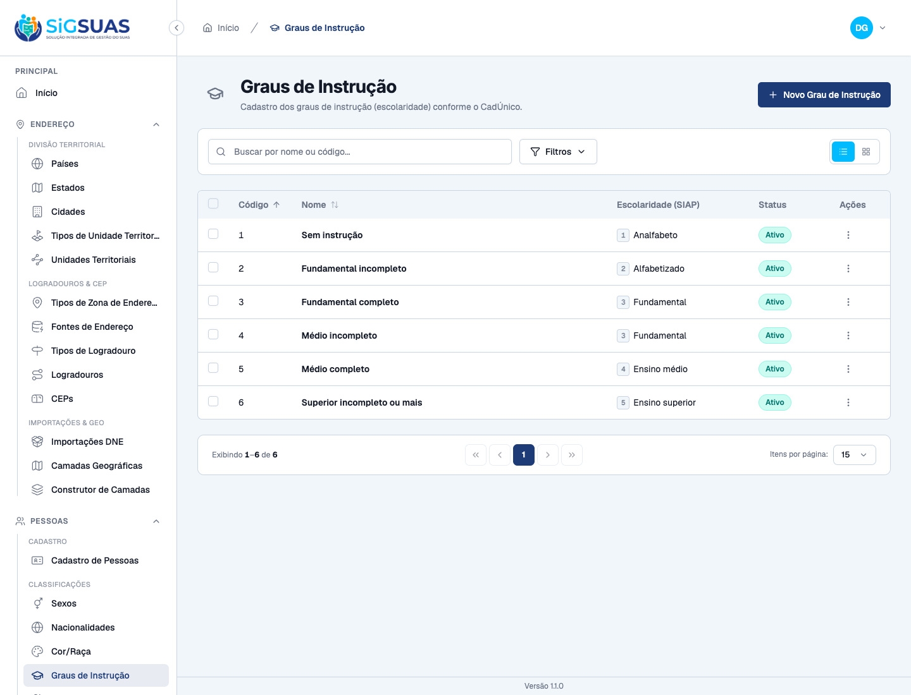
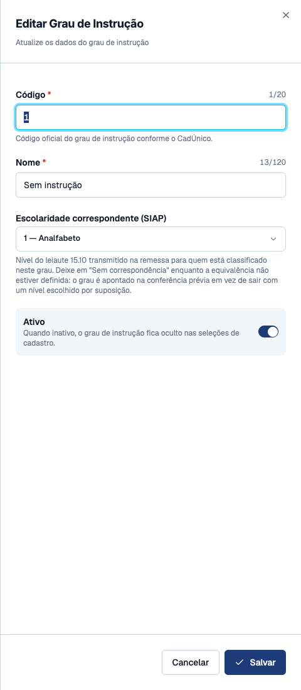
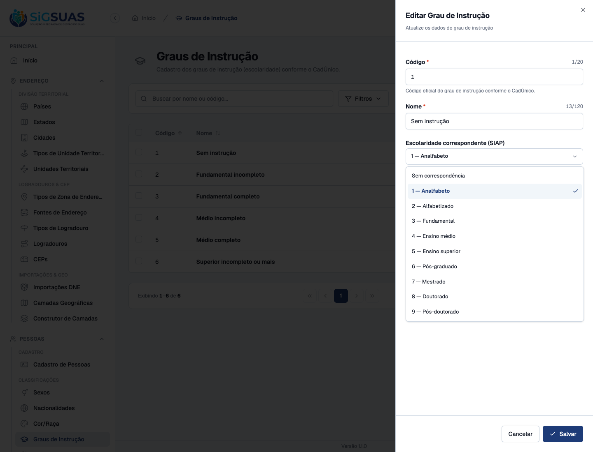
Critério (Gherkin): Dado que existe um grau de instrução com schooling_level_id NULL E que integrantes importados estão classificados nele Quando a conferência prévia da remessa for solicitada Então é apontada pendência domain_unmapped indicando o grau a corrigir no Painel Global E nenhum nível é atribuído por suposição
Como foi testado: Onde este critério pôde e onde não pôde ser exercitado na tela. A conferência prévia da remessa é função do Painel do Tenant (guard client), e esta HU é inteiramente do Painel Global — por isso a pendência em si não foi reproduzida no navegador deste dossiê, e dizê-lo é mais honesto do que forjar uma tela que não pertence a esta história. A verificação foi feita em duas frentes: (a) na tela, evidenciando que o estado “sem correspondência” é oferecido e explicado ao Administrador; (b) na suíte automatizada, executando os testes que exercitam a apuração da pendência sobre DiagnosisCompletenessService. Como a suíte --filter=DiagDomains não alcança esses dois testes, eles foram rodados à parte e sua saída consta do anexo.
Critério (Gherkin): Dado que sou Administrador Quando eu tentar criar um item novo em qualquer um dos quatro domínios Então a rota POST não existe (405) E a tela não oferece a ação, e informa que o domínio é fechado pelo Manual do SIAP
Como foi testado: Este critério se prova pela ausência de uma ação, e ausência não se fotografa sozinha. Por isso a verificação foi feita nos dois lados. Na tela, autenticado como Administrador — o perfil de maior privilégio do painel, level 0 —, procurei nas quatro telas o botão de criação que todo outro cadastro do Painel Global tem no canto superior direito (“Novo …”, como o “Novo Grau de Instrução” que aparece no print do CA04, na mesma sessão e no mesmo perfil). No backend, disparei POST contra os quatro recursos na API em execução e conferi o código de resposta, além da suíte Pest que assere o mesmo nos dois guards.
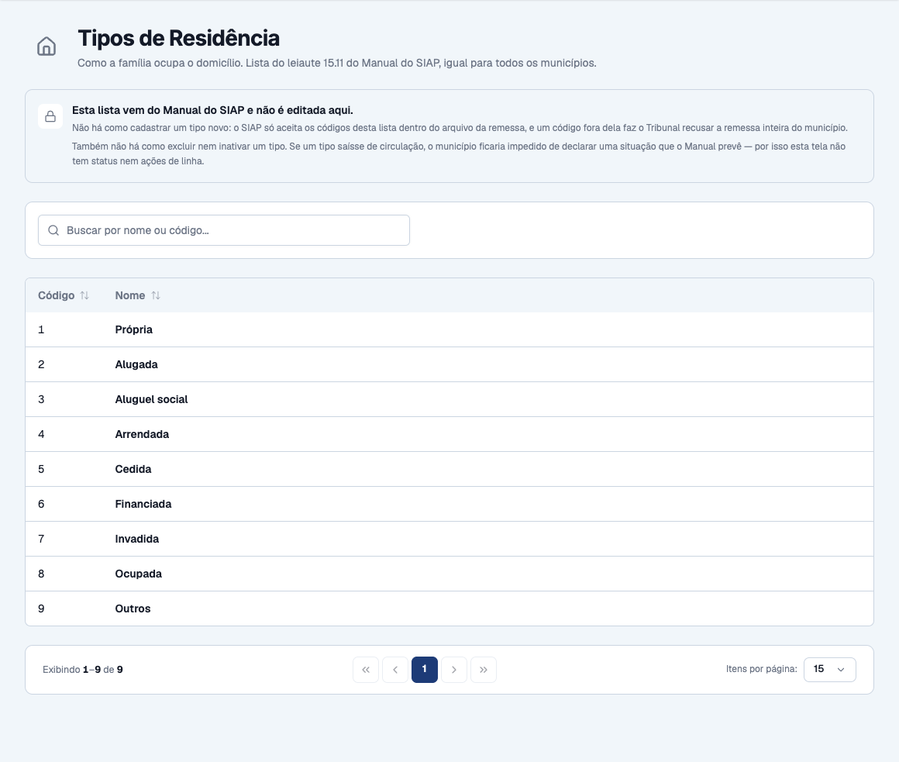
Critério (Gherkin): Dado que estou consultando qualquer um dos quatro domínios Quando eu procurar a ação de excluir ou inativar um item Então ela não existe — nem rota (405), nem coluna is_active, nem deleted_at E a tela informa que inativar impediria o município de declarar uma situação prevista pelo Manual
Como foi testado: Mesma disciplina do CA06: procurei, como Administrador, o que deveria estar lá se o cadastro fosse comum — a coluna Status e a coluna Ações com o menu de três pontos (Editar / Inativar / Excluir), presentes na tela de Graus de Instrução da mesma sessão. Complementei com DELETE/PUT/PATCH na API em execução e com a asserção estrutural da suíte sobre o próprio schema.
Critério (Gherkin): Dado que sou Master autenticado no guard client Quando eu chamar POST/PUT/DELETE em qualquer um dos quatro recursos Então recebo 405 — a rota não existe para nenhum guard E o GET continua respondendo, porque o select precisa da lista
Como foi testado: Critério sem UI no Painel Global: ele descreve o que acontece quando o município tenta escrever, e a prova é de rota, não de tela. Verificado pela suíte automatizada, que autentica um Master real no guard client e dispara os quatro verbos de escrita contra os quatro recursos, e pela sonda HTTP na API em execução. Nenhum print é oferecido aqui de propósito — não há tela deste critério no painel exercitado.
Evidência por cobertura automatizada — ver Anexo.
Critério (Gherkin): Dado que alterei a correspondência de um grau de instrução Quando eu consultar a trilha de auditoria do item Então a alteração consta, com autor, data e os valores antes e depois de schooling_level_id
Como foi testado: Alterei de fato o de-para pela tela, como Administrador: abri o grau “Sem instrução” em /app/education-levels, troquei “Escolaridade correspondente (SIAP)” de 1 — Analfabeto para 2 — Alfabetizado e salvei. Em seguida fui buscar a trilha resultante. Ressalva metodológica: o cadastro de Graus de Instrução não tem tela de trilha de auditoria no Painel Global (não há rota activity nem visualização de histórico para este recurso), de modo que a segunda metade do critério — “consultar a trilha” — não pôde ser cumprida por navegação. A trilha foi lida diretamente no registro de auditoria gravado pela ação de tela, e é ele que está transcrito abaixo. Ao final, restaurei a correspondência original pela mesma tela.
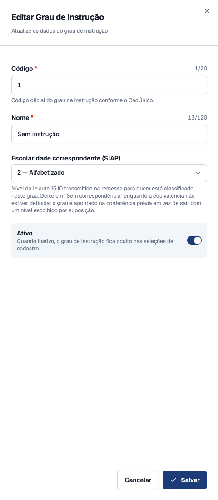
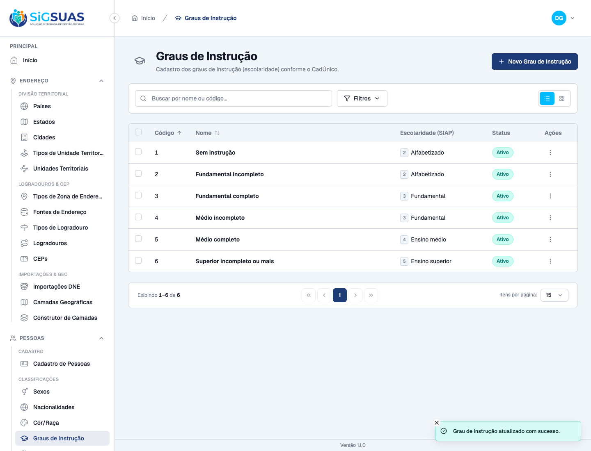
A §3 da spec atribui ao Operacional Global (ADMIN_OPERADOR) a capacidade de “Consultar os quatro domínios e o de-para”. Na prática, ele não consegue: as oito abilities de leitura (residence-types.index/.show, schooling-levels.index/.show, school-situations.index/.show, disability-types.index/.show) existem no banco — foram colhidas corretamente pelo permissions:sync — mas não foram concedidas ao papel.
Verificado ao vivo: autenticado como Operacional Global (CPF 731.285.016-29), o grupo Diagnóstico (Manual SIAP) não aparece no menu lateral, e a navegação direta para /app/residence-types cai em /403 — Acesso negado. O contraste no mesmo print é o que torna o achado inequívoco: no mesmo menu, no mesmo perfil, os lookups das fases anteriores estão lá (Tipos de Atendimento, Códigos de Encaminhamento, Serviços de Acompanhamento, Razões de Desligamento, Serviços de Participação, Locais de Realização, Tipos de Benefício Eventual, Ações de Capacitação). Ou seja, não é uma restrição deliberada do papel — é uma concessão que faltou.
Causa provável: database/seeders/RoleSeeder.php concede leitura ao admin_operador por método explícito a cada HU de lookup — existem oito deles, entre os quais syncAdminOperadorEventualBenefitTypePermissions() (US-BENEF-01), syncAdminOperadorFollowUpDomainPermissions() (US-ACOMP-01) e syncAdminOperadorParticipationDomainPermissions() (US-SCFV-01). Não há o equivalente para os quatro domínios da US-DIAG-01.
Impacto: nenhum critério de aceite desta HU falha por causa disso — todos os nove são escritos do ponto de vista do Administrador, do Master ou da rota. O que diverge é a tabela de perfis da §3. Fica para decisão do PO: (a) conceder as oito abilities ao papel, seguindo o padrão das quatro HUs anteriores, ou (b) corrigir a §3 da spec, se a consulta pelo Operacional Global não for mesmo desejada.
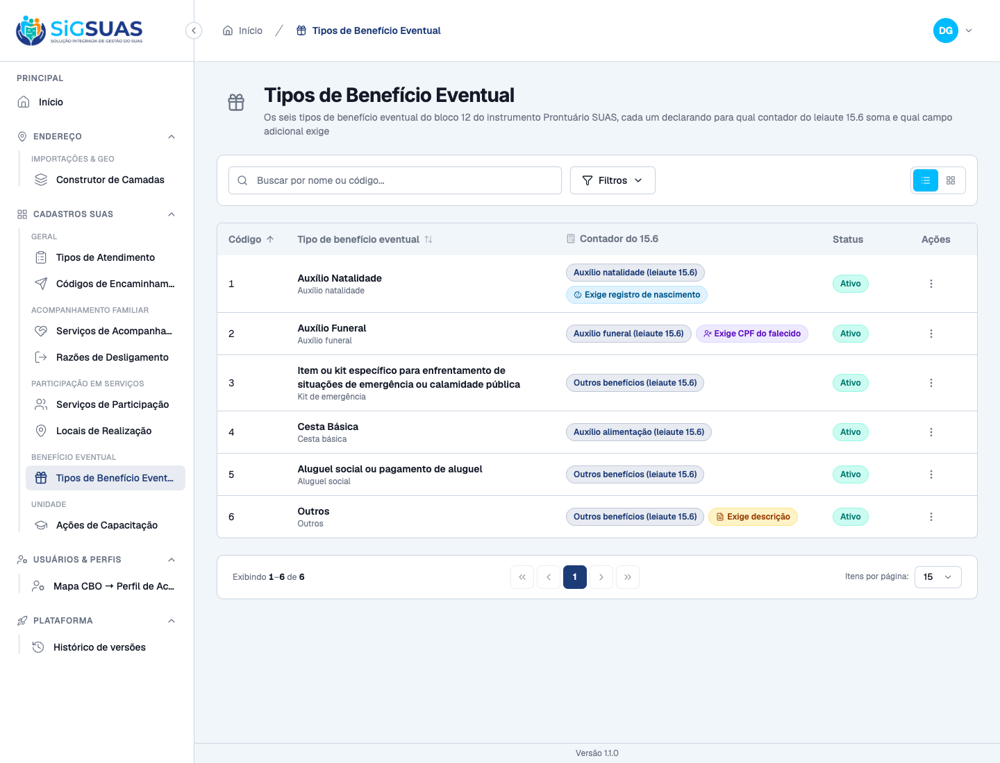
/app/residence-types com o mesmo perfil: 403 — Acesso negado.O dossiê foi capturado contra o admin servido em http://localhost:4173. Vale registrar o porquê, porque o ambiente tinha uma armadilha: havia também um servidor de desenvolvimento do admin em :5174, e ele não serve para evidência — está apontado para uma API em localhost:8000, porta onde a API do eSUAS não responde (ela está em :80), e, mesmo com o endereço corrigido, o login devolve 200 e a chamada seguinte devolve 401, porque o Sanctum deste ambiente só considera stateful as origens localhost:4173 e localhost:4174. O sintoma engana (parece credencial inválida); a causa é a porta. Em :4173 a sessão se sustenta e todo o fluxo — aceite legal, navegação, escrita do de-para — funciona normalmente.
Nenhum arquivo de configuração foi alterado para isso, e nenhuma migration ou seed foi executada: o banco já estava semeado e é compartilhado com outra captura em andamento.
O CA09 exige uma escrita real. O único dado alterado foi o de-para do grau “Sem instrução”, levado de 1 — Analfabeto para 2 — Alfabetizado e restaurado ao valor original pela própria tela ao fim do critério. A conferência final registrou os seis graus exatamente como a §4.3 da spec os define, e a consulta de sanidade §8.1 (graus sem correspondência) retorna zero linhas. As linhas de auditoria dessa ida e volta permanecem na trilha — como devem.
O anexo reúne três execuções. A principal é pest --filter=DiagDomains: 97 testes, 371 asserções, todos verdes, cobrindo os três arquivos da HU (unitário dos seeders, feature das rotas do Painel Global e feature do DatabaseSeeder). A segunda cobre o CA05, cujos testes vivem em AttendanceReportDiagnosisTest e não são alcançados pelo filtro DiagDomains — por isso foram rodados à parte, e não presumidos cobertos. A terceira é a sonda HTTP contra a API em execução, que verifica os 405 fora do ambiente de teste, no mesmo banco e na mesma aplicação onde os prints foram tirados.
PASS Tests\Unit\DiagDomainsSeedTest ✓ it semeia exatamente os nove tipos de residencia do 15.11, sem renu… 0.44s ✓ it semeia cada tipo de residencia com o codigo e o nome exatos da §… 0.02s ✓ it semeia cada tipo de residencia com o codigo e o nome exatos da §… 0.02s ✓ it semeia cada tipo de residencia com o codigo e o nome exatos da §… 0.02s ✓ it semeia cada tipo de residencia com o codigo e o nome exatos da §… 0.02s ✓ it semeia cada tipo de residencia com o codigo e o nome exatos da §… 0.02s ✓ it semeia cada tipo de residencia com o codigo e o nome exatos da §… 0.02s ✓ it semeia cada tipo de residencia com o codigo e o nome exatos da §… 0.02s ✓ it semeia cada tipo de residencia com o codigo e o nome exatos da §… 0.02s ✓ it semeia cada tipo de residencia com o codigo e o nome exatos da §… 0.02s ✓ it semeia exatamente os nove niveis de escolaridade do 15.10, sem r… 0.02s ✓ it semeia cada nivel de escolaridade com o codigo e o nome exatos d… 0.02s ✓ it semeia cada nivel de escolaridade com o codigo e o nome exatos d… 0.03s ✓ it semeia cada nivel de escolaridade com o codigo e o nome exatos d… 0.03s ✓ it semeia cada nivel de escolaridade com o codigo e o nome exatos d… 0.06s ✓ it semeia cada nivel de escolaridade com o codigo e o nome exatos d… 0.02s ✓ it semeia cada nivel de escolaridade com o codigo e o nome exatos d… 0.02s ✓ it semeia cada nivel de escolaridade com o codigo e o nome exatos d… 0.02s ✓ it semeia cada nivel de escolaridade com o codigo e o nome exatos d… 0.02s ✓ it semeia cada nivel de escolaridade com o codigo e o nome exatos d… 0.02s ✓ it semeia exatamente as cinco situacoes escolares do 15.10, sem ren… 0.02s ✓ it semeia cada situacao escolar com o codigo e o nome exatos da §4.… 0.02s ✓ it semeia cada situacao escolar com o codigo e o nome exatos da §4.… 0.02s ✓ it semeia cada situacao escolar com o codigo e o nome exatos da §4.… 0.04s ✓ it semeia cada situacao escolar com o codigo e o nome exatos da §4.… 0.02s ✓ it semeia cada situacao escolar com o codigo e o nome exatos da §4.… 0.02s ✓ it semeia exatamente os dez tipos de deficiencia do 15.10, sem renu… 0.02s ✓ it semeia cada tipo de deficiencia com o codigo e o nome exatos da… 0.02s ✓ it semeia cada tipo de deficiencia com o codigo e o nome exatos da… 0.02s ✓ it semeia cada tipo de deficiencia com o codigo e o nome exatos da… 0.02s ✓ it semeia cada tipo de deficiencia com o codigo e o nome exatos da… 0.02s ✓ it semeia cada tipo de deficiencia com o codigo e o nome exatos da… 0.02s ✓ it semeia cada tipo de deficiencia com o codigo e o nome exatos da… 0.02s ✓ it semeia cada tipo de deficiencia com o codigo e o nome exatos da… 0.02s ✓ it semeia cada tipo de deficiencia com o codigo e o nome exatos da… 0.02s ✓ it semeia cada tipo de deficiencia com o codigo e o nome exatos da… 0.02s ✓ it semeia cada tipo de deficiencia com o codigo e o nome exatos da… 0.02s ✓ it NAO semeia "transtorno ou doenca mental" entre os tipos de defic… 0.02s ✓ it nao cria coluna is_active nem deleted_at em nenhum dos quatro do… 0.02s ✓ it nao cria coluna is_active nem deleted_at em nenhum dos quatro do… 0.02s ✓ it nao cria coluna is_active nem deleted_at em nenhum dos quatro do… 0.01s ✓ it nao cria coluna is_active nem deleted_at em nenhum dos quatro do… 0.02s ✓ it nao cria tenant_id em nenhum dos quatro dominios — sao lookups G… 0.02s ✓ it nao cria tenant_id em nenhum dos quatro dominios — sao lookups G… 0.01s ✓ it nao cria tenant_id em nenhum dos quatro dominios — sao lookups G… 0.01s ✓ it nao cria tenant_id em nenhum dos quatro dominios — sao lookups G… 0.03s ✓ it preserva is_active e deleted_at em education_levels (D02 vale so… 0.02s ✓ it mapeia cada um dos seis graus do CadUnico para o nivel exato da… 0.04s ✓ it mapeia cada um dos seis graus do CadUnico para o nivel exato da… 0.02s ✓ it mapeia cada um dos seis graus do CadUnico para o nivel exato da… 0.02s ✓ it mapeia cada um dos seis graus do CadUnico para o nivel exato da… 0.02s ✓ it mapeia cada um dos seis graus do CadUnico para o nivel exato da… 0.02s ✓ it mapeia cada um dos seis graus do CadUnico para o nivel exato da… 0.02s ✓ it cobre as SEIS linhas de education_levels, sem nenhuma NULL apos… 0.02s ✓ it é idempotente: rodar os seeders duas vezes nao duplica item nem… 0.03s ✓ it deixa os niveis 6..9 do leiaute INALCANCAVEIS pelo de-para — Ach… 0.02s ✓ it nao inventa correspondencia quando os niveis do leiaute ainda na… 0.02s PASS Tests\Feature\Api\Manager\DiagDomainsTest ✓ it lista cada dominio com exatamente as opcoes do Manual, nos dois… 0.12s ✓ it lista cada dominio com exatamente as opcoes do Manual, nos dois… 0.04s ✓ it lista cada dominio com exatamente as opcoes do Manual, nos dois… 0.04s ✓ it lista cada dominio com exatamente as opcoes do Manual, nos dois… 0.04s ✓ it lista cada dominio com exatamente as opcoes do Manual, nos dois… 0.04s ✓ it lista cada dominio com exatamente as opcoes do Manual, nos dois… 0.04s ✓ it lista cada dominio com exatamente as opcoes do Manual, nos dois… 0.04s ✓ it lista cada dominio com exatamente as opcoes do Manual, nos dois… 0.04s ✓ it abre um item de cada dominio pelo uuid, nos dois guards (CA01/CA… 0.05s ✓ it abre um item de cada dominio pelo uuid, nos dois guards (CA01/CA… 0.04s ✓ it abre um item de cada dominio pelo uuid, nos dois guards (CA01/CA… 0.04s ✓ it abre um item de cada dominio pelo uuid, nos dois guards (CA01/CA… 0.04s ✓ it abre um item de cada dominio pelo uuid, nos dois guards (CA01/CA… 0.04s ✓ it abre um item de cada dominio pelo uuid, nos dois guards (CA01/CA… 0.04s ✓ it abre um item de cada dominio pelo uuid, nos dois guards (CA01/CA… 0.05s ✓ it abre um item de cada dominio pelo uuid, nos dois guards (CA01/CA… 0.04s ✓ it apresenta as nove opcoes de tipo de residencia do leiaute 15.11… 0.04s ✓ it apresenta as dez opcoes de tipo de deficiencia, sem "transtorno… 0.04s ✓ it responde 405 a POST, PUT, PATCH e DELETE em cada dominio, nos do… 0.06s ✓ it responde 405 a POST, PUT, PATCH e DELETE em cada dominio, nos do… 0.05s ✓ it responde 405 a POST, PUT, PATCH e DELETE em cada dominio, nos do… 0.05s ✓ it responde 405 a POST, PUT, PATCH e DELETE em cada dominio, nos do… 0.05s ✓ it responde 405 a POST, PUT, PATCH e DELETE em cada dominio, nos do… 0.05s ✓ it responde 405 a POST, PUT, PATCH e DELETE em cada dominio, nos do… 0.05s ✓ it responde 405 a POST, PUT, PATCH e DELETE em cada dominio, nos do… 0.05s ✓ it responde 405 a POST, PUT, PATCH e DELETE em cada dominio, nos do… 0.05s ✓ it registra SOMENTE verbos de leitura na tabela de rotas de cada do… 0.04s ✓ it registra SOMENTE verbos de leitura na tabela de rotas de cada do… 0.04s ✓ it registra SOMENTE verbos de leitura na tabela de rotas de cada do… 0.04s ✓ it registra SOMENTE verbos de leitura na tabela de rotas de cada do… 0.03s ✓ it mantem manager.php sem nenhuma rota para os quatro dominios (D03… 0.04s ✓ it traz o de-para para a escolaridade do leiaute no payload do grau… 0.04s ✓ it traz o de-para para a escolaridade do leiaute no payload do grau… 0.04s ✓ it indica no show para qual nivel do leiaute o grau corresponde (CA… 0.04s ✓ it apresenta null explicito quando o grau nao tem correspondencia (… 0.04s ✓ it grava o de-para pelo PUT do grau de instrucao e o audita com ant… 0.05s ✓ it aceita null para desfazer a correspondencia, e audita (CA09/D05) 0.04s ✓ it recusa 422 um nivel de escolaridade inexistente no de-para (§10) 0.04s ✓ it mantem a manutencao do de-para exclusiva do guard manager (RN10/… 0.05s PASS Tests\Feature\Seeders\DiagDomainsDatabaseSeederTest ✓ it semeia os quatro dominios e o de-para completo pelo DatabaseSeed… 7.79s Tests: 97 passed (371 assertions) Duration: 11.82s =================================================================== ANEXO COMPLEMENTAR - CA05 (pendencia domain_unmapped) Comando: pest tests/Feature/Client/AttendanceReportDiagnosisTest.php --filter="de-para|escolaridade|global|pendenc" =================================================================== PASS Tests\Feature\Client\AttendanceReportDiagnosisTest ✓ it aponta o Painel Global quando o grau de instrucao nao tem de-par… 0.58s ✓ it nao inventa pendencia de configuracao quando todo grau tem de-pa… 0.08s Tests: 2 passed (5 assertions) Duration: 0.71s =================================================================== ANEXO COMPLEMENTAR - CA06/CA07/CA08 (sonda HTTP ao vivo na API em execucao) =================================================================== Sonda HTTP ao vivo — API Sail em http://localhost (guard manager e client) Data: 17/09/2026 18:02 RECURSO METODO HTTP OBSERVACAO ------------------------------------------------------------------ residence-types POST 405 rota inexistente (CA06/CA07/CA08) residence-types PUT 405 rota inexistente (CA06/CA07/CA08) residence-types PATCH 405 rota inexistente (CA06/CA07/CA08) residence-types DELETE 405 rota inexistente (CA06/CA07/CA08) residence-types GET 401 leitura existe (401 = exige autenticacao, rota presente) schooling-levels POST 405 rota inexistente (CA06/CA07/CA08) schooling-levels PUT 405 rota inexistente (CA06/CA07/CA08) schooling-levels PATCH 405 rota inexistente (CA06/CA07/CA08) schooling-levels DELETE 405 rota inexistente (CA06/CA07/CA08) schooling-levels GET 401 leitura existe (401 = exige autenticacao, rota presente) school-situations POST 405 rota inexistente (CA06/CA07/CA08) school-situations PUT 405 rota inexistente (CA06/CA07/CA08) school-situations PATCH 405 rota inexistente (CA06/CA07/CA08) school-situations DELETE 405 rota inexistente (CA06/CA07/CA08) school-situations GET 401 leitura existe (401 = exige autenticacao, rota presente) disability-types POST 405 rota inexistente (CA06/CA07/CA08) disability-types PUT 405 rota inexistente (CA06/CA07/CA08) disability-types PATCH 405 rota inexistente (CA06/CA07/CA08) disability-types DELETE 405 rota inexistente (CA06/CA07/CA08) disability-types GET 401 leitura existe (401 = exige autenticacao, rota presente)